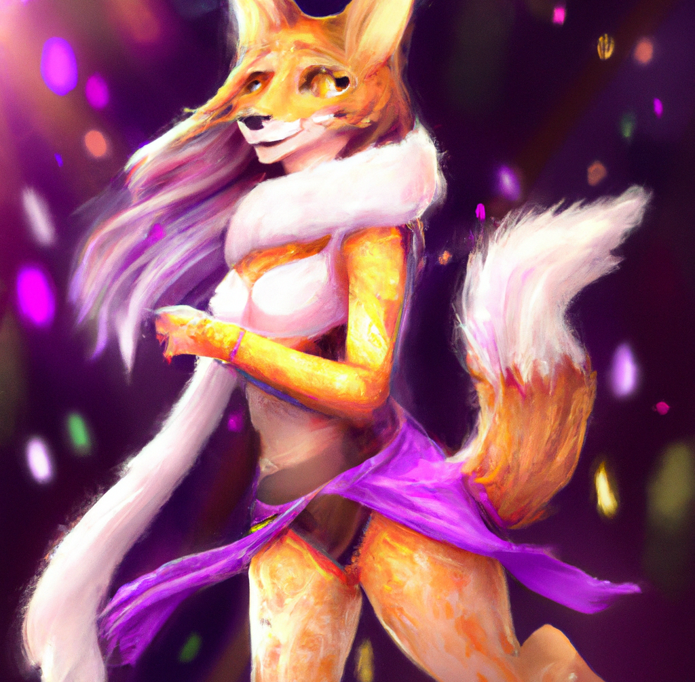
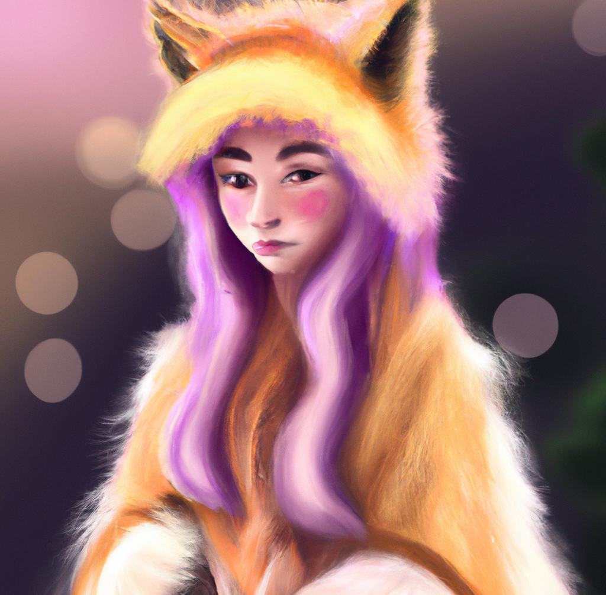
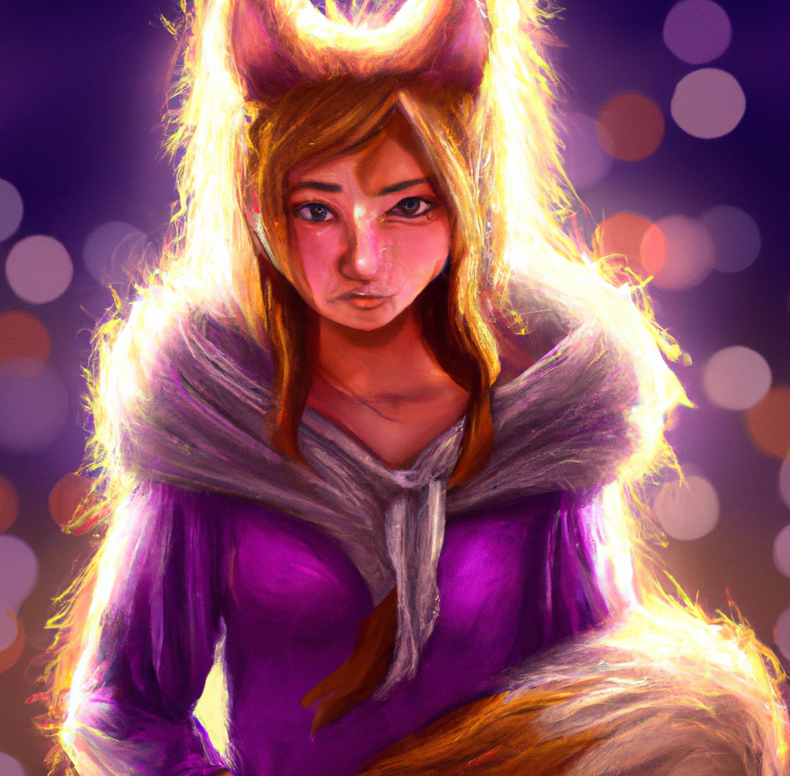
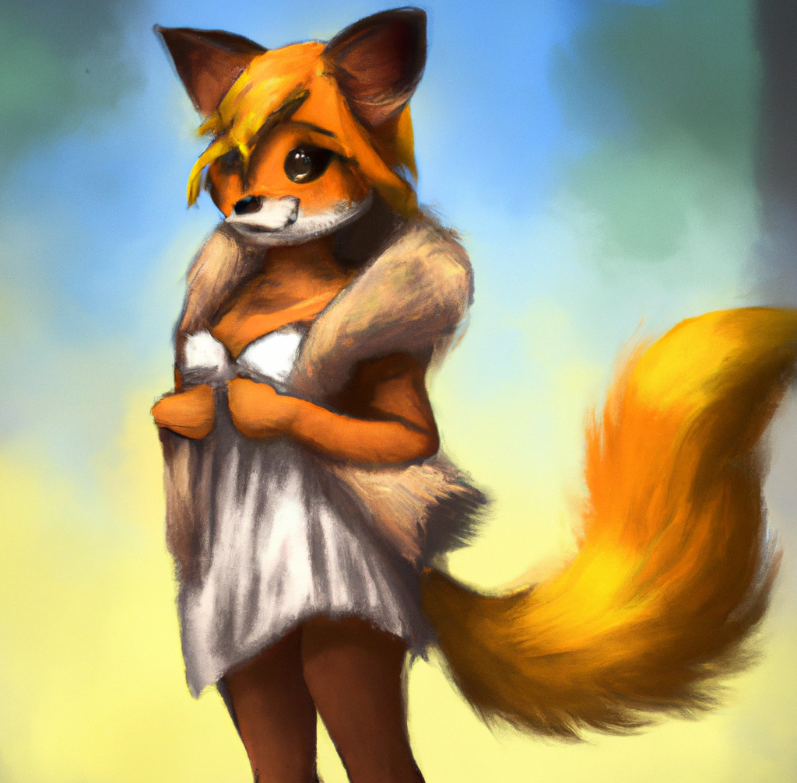
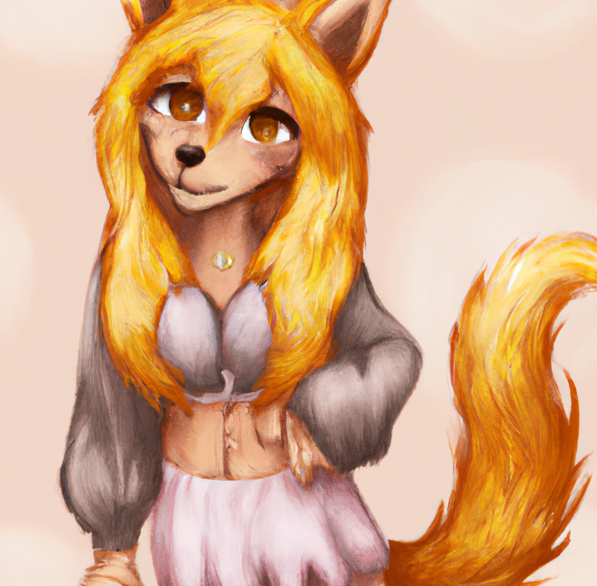

I had always been fascinated by animals and the weird feelings they ignited in my heart. I loved the way they looked and the way they moved, and I was drawn to the sense of freedom and wildness that seemed to radiate from them. So when I discovered the world of furries, I was immediately hooked.
At first, I was content just to watch the videos and look at the pictures. But as my fascination grew, I found myself wanting more. I started spending hours on the cam sites, chatting with the furry e-girls and learning everything I could about them. They were just so cute, so nice, so innocent and playful...
As I spent more and more time on the cam sites, I became increasingly desperate for the attention and affection of the furry girls. I would do anything to get them to notice me, including spending all of my money on donations. But no matter how much I gave, it never seemed to be enough.
Some of the girls were more responsive than others, but even the ones who seemed to be interested in me would eventually lose interest and move on to other users. It was always the same story - I would get a brief flicker of attention and then be cast aside, left to watch as the girls lavished their attention on other users.
I became bitter and resentful, convinced that there was something wrong with me. I couldn't understand why the furry e-girls wouldn't give me the time of day, no matter how much I begged and pleaded. I was desperate for their affection, and I couldn't stand the thought of being ignored and rejected
I found myself spending all of my money on these activities. I donated hundreds of dollars to the girls, hoping to get their attention and affection. But no matter how much I spent, it never seemed to be enough. I became completely consumed by the fantasy, and I would do whatever it took to keep it alive.
When I ran out of money, I started stealing from my friends. At first, it was just small amounts, but as my addiction worsened, I took larger and larger sums. My friends noticed the missing cash, but they had no idea where it was going.
Finally, one of my friends confronted me about the stolen money. I tried to deny it, but the evidence was too damning. My friend threatened to beat me up if I didn't give the money back, and I knew I had to come up with the cash fast.
As I always do, I joined the webcam chat of my favourite furry girl and spilled out all of my emotions there in a series of posts, hoping to get her affection, maybe just a little bit of compassion...
After the show, she has messaged me. But she didn't do it ouf of sympathy. She offered me money for... sexual favors. Sexual favors that I felt disgusted with and that I didn't want to do. But I needed the money... I feel ashamed and embarrased. My porn addiction had cost me everything - my friends, my family, and now, finally, my dignity...
This is my confession. I hope it'll help you learn something.